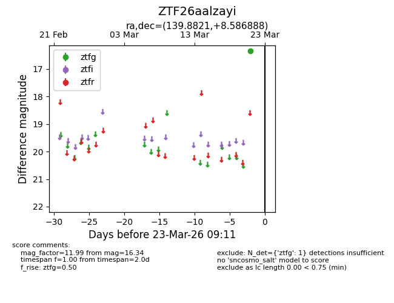
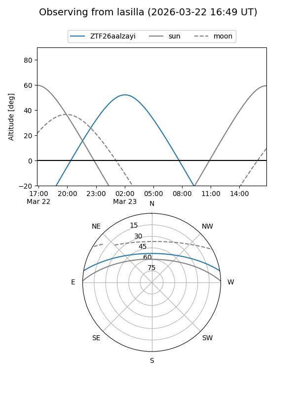
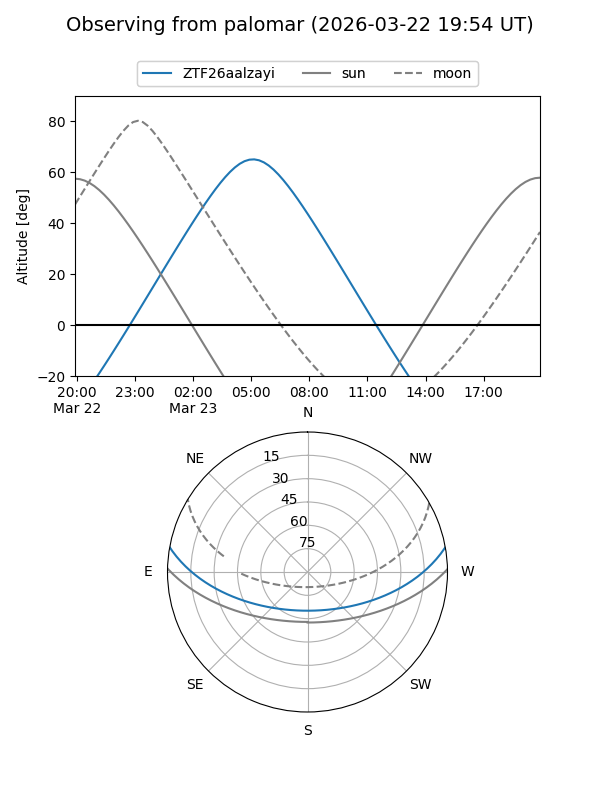

ZTF26aalzayi
Target ZTF26aalzayi at 2026-03-23 09:13
Aliases and brokers:
FINK: link
Lasair: link
ALeRCE: link
alt names
ZTF26aalzayi (ztf,fink_ztf)
Coordinates:
equatorial (ra, dec) = 139.8821,+8.58689
equatorial (HMS+DMS) = 09:19:31.71,+08:35:12.80
galactic (l, b) = (222.8897,+36.72425)
Flags:
Photometry:
last ztfg=16.34
1 ztfg detections
Lightcurve

Visibility


Additional plots